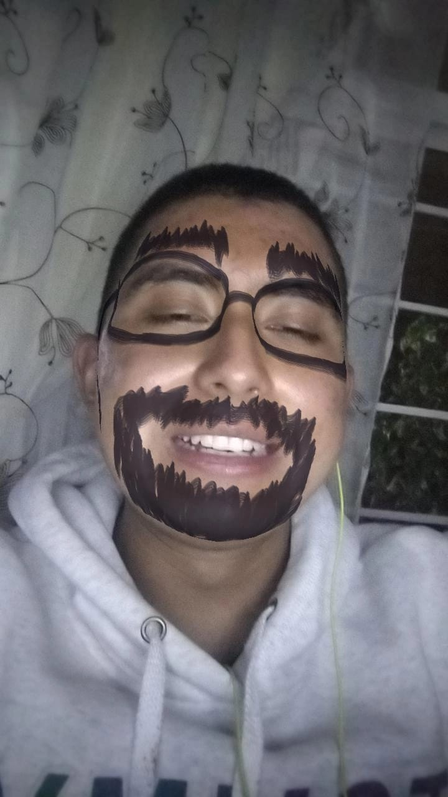

.
Bibliografia Fernando Antonio Duran Ramos

Fernando Antonio Duran Ramos
Mi nombre es Fernando Antonio Duran Ramos
naci un 22 de Noviembre del 2003 en el municipio de ecatepec
Tengo ahorita 18 años y en poco tiempo cumplo los 19 años
Curse el kinder, la primaria, secundaria y preparatoria en donde en cada etapa aprendia cosas nuevas y
conocia a gente que fueron parte de mi en elgun momento, ahorita estoy en la Universidad en donde curso
la carrera de ingenieria de software y me encuentro con personas que aprecio demasiado
Vivo en los Heroes Tecamac junto a mis padres, mi hermana y mi perro,
mi mama se llama Norma, mi papa se llama Marco, mi hermana se llama Yazmin
y mi perro tiene el nombre de Jerry
Me gusta el futbol y el equipo al que le voy
es a las chivas (El mas grande de Mexico, del continente y del mundo)
En mis tiempos libres me gusta ver series y salir a pasear o a jugar futbol con mis amigos
Mi comida favorta es los tacos, en especial los de suadero
Disfruto mucho de pasar tiempo con mi familia, ya sea jugando, platicando o simplemente el tenerlos a lado mio
Mis planes a futuro son poder terminar mi carrera y conseguir un trabajo estable para luego poder tener mis propias cosas
y tener una familia.
S